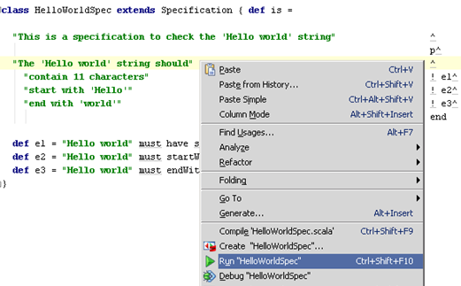

There are many ways to execute specs2 specifications:
specs2.run runnerspecs2.html runnerspecs2.files runnerNotifier interface (simple) or the Exporter interface (with a full access to the executed specification)specs2 is available for Scala 2.10 onwards and uses the following libraries, as specified using the sbt dsl:
| Dependency | Comment |
|---|---|
"org.scalaz" % "scalaz-core" % "7.1.0" | mandatory |
"org.scalaz" % "scalaz-concurrent" % "7.1.0" | mandatory |
"com.chuusai" % "shapeless" % "1.2.4" | if you use the GWT trait |
"org.scalacheck" %% "scalacheck" % "1.10.0" | if using ScalaCheck |
"org.mockito" % "mockito-core" % "1.9.5" | if using Mockito. Note: specs2.jar must be placed before mockito.jar on the classpath |
"org.hamcrest" % "hamcrest-core" % "1.3" | if using Hamcrest matchers with Mockito |
"junit" % "junit" % "4.11" | if using JUnit |
"org.scala-sbt" % "test-interface" % "1.0" | provided by sbt when using it |
"org.pegdown" % "pegdown" % "1.2.1" | if using the html runner |
"org.specs2" % "classycle" % "1.4.1" | if using the org.specs2.specification.Analysis trait |
"org.scala-lang" % "scala-reflect" % "2.10.3" | if using interpolated specifications and/or macro matchers |
"org.scala-lang.plugins" %% "macro-paradise" % "2.0.0" | if using macro matchers, add this macro plugin to sbt with addCompilerPlugin("org.scala-lang.plugins" %% "macro-paradise" % "2.0.0") |
specs2 can be downloaded from Sonatype as a big jar containing all the specs2 classes but also as smaller jars, depending on the features you need:
specs2-core: for simple specifications executable in the console or with sbtspecs2-matcher: to use specs2 matchers with JUnitspecs2-matcher-extra: for the optional specs2 matchersspecs2-scalacheck: to use ScalaCheck properties in specificationsspecs2-mock: to use Mockito matchersspecs2-analysis: to use package dependencies matcherspecs2-gwt: to write given-when-then specificationsspecs2-form: Fit-like formsspecs2-html: to export specifications as htmlspecs2-junit: to run specifications as JUnit testsYou can specify arguments which will control the execution and reporting. They can be passed on the command line, or declared inside the specification, using the args(name=value) syntax:
class MySpec extends Specification { def is = args(xonly=true) ^ s2"""
Clever spec title
And some intro text
brilliant expectation $success """
}
From inside a specification, the available arguments are the following:
| Name | Default value | Description |
|---|---|---|
| Selection | ||
ex |
.* | regular expression specifying the examples to execute. Use ex .*brilliant.* on the command line |
include |
"" | execute only the fragments tagged with any of the comma-separated list of tags: "t1,t2,..." |
exclude |
"" | do not execute the fragments tagged with any of the comma-separated list of tags: "t1,t2,..." |
wasIssue |
false | select only previously failed/error examples |
was |
"" | select only some previously executed examples based on their status |
specName |
".*Spec" | regular expression to use when executing specifications with the FilesRunner |
| Execution | ||
plan |
false | only report the text of the specification without executing anything |
skipAll |
false | skip all the examples |
stopOnFail |
false | skip all examples after the first failure or error |
stopOnSkip |
false | skip all examples after the first skipped result |
sequential |
false | don't execute examples concurrently |
isolated |
false | execute each example in its own specification to get "fresh" local variables |
random |
false | execute each example sequentially but in random order |
threadsNb |
Runtime.getRuntime.availableProcessors |
number of threads to use for concurrent execution |
| Storing | ||
never |
false | never store statistics |
reset |
false | remove previously stored statistics |
| Reporting | ||
xonly |
false | only report failures and errors |
showOnly |
"" | only report some examples based on their status |
color |
true | use colors in the output (nocolor can also be used on the command line) |
pegdownExtensions |
org.pegdown.Extensions.ALL |
specifies the extensions used when processing Markdown content with the pegdown library; the value is an Int that is determinded by combining the possible values from org.pegdown.Extensions with a logical AND; note that SMARTS and QUOTES are always disabled for now |
pegdownTimeout |
2000 |
Timeout for parsing Markdown text with Pegdown in milliseconds |
failtrace |
false | report the stacktrace for failures |
colors |
org.specs2.text.SmartColors |
define alternative colors (replace failureColor from being yellow to magenta for example) |
showtimes |
false | show individual execution times |
debugMarkdown |
false | print more information when Markdown formatting fails |
diffs |
SmartDiffs |
use a specific algorithm to display differences |
fromSource |
true | true takes an AutoExample description from the file, false from the expectation ok message |
traceFilter |
DefaultStackTraceFilter |
use a StackTraceFilter instance for filtering the reported stacktrace elements |
checkUrls |
false | if true, will parse the html files and check that local or http hrefs can be accessed |
notoc |
false | if true, will not create a table of contents on the generated html page |
notifier |
String | name of a class extending the org.specs2.reporter.Notifier trait |
exporter |
String | name of a class extending the org.specs2.reporter.Exporter trait |
reporter |
String | name of a class extending the org.specs2.reporter.Reporter trait |
Most of the arguments above can be set in a specification with args(name=value). However Scala would not allow the args method to accept all the possible
arguments as parameters (because a method can only have up to 22 parameters). This is why the least frequently used arguments (not in italics) can be set with an object called args, having separate methods for setting all the parameters, by "category". For example:
args.select(specName = ".*Test", include="slow")
args.execute(threadsNb = 2)
args.report(showtimes = true, xonly = true)
There are some available shortcuts for some arguments
| Name | Equivalent | Description |
|---|---|---|
include(tags: String) |
args(include=tags) |
|
exclude(tags: String) |
args(exclude=tags) |
|
only(examples: String) |
args(ex=examples) |
|
wasIssue |
args(wasIssue=true) |
|
was(status: String) |
args(was=status) |
|
plan |
args(plan=true) |
|
skipAll |
args(skipAll=true) |
|
stopOnFail |
args(stopOnFail=true) |
|
stopOnSkip |
args(stopOnSkip=true) |
|
sequential |
args(sequential=true) |
|
isolated |
args(isolated=true) |
|
xonly |
args(xonly=true) |
|
showOnly(status: String) |
args(showOnly=status) |
|
descFromExpectations |
args.report(fromSource=false) |
create the example description for the ok message of the expectation instead of the source file |
fullStackTrace |
args.report(traceFilter=NoStackTraceFilter) |
the stacktraces are not filtered |
diffs(show, separators, triggerSize, shortenSize, diffRatio, full) |
args.report(diffs=SmartDiffs(show, separators, triggerSize, shortenSize, diffRatio, full)) |
to display the differences when doing equality comparison |
All the files created during the execution of a specification will be created in the target/specs-report directory. You can change that by setting the-Dspecs2.outDir system property.
When a specification has been executed its statistics and failed examples will be stored by default in a specific stats directory created in the output directory. This data can be used on subsequent runs to:
You can either:
args.store(never=true) argument (or neverstore on the command line)args.store(reset=true) argument (or resetstore on the command line)The statistics directory can also be redefined independently of the output directory with the specs2.statsDir system variable.
The was and showOnly arguments expect a String made of "status flags". For example, xonly is equivalent to showOnly("x!"). Here is the list of all the flags which you can use to control the selection of fragments before execution or their display:
| Flag | Description |
|---|---|
+ |
successful example |
x |
failed example |
! |
error example |
o |
skipped example |
* |
pending example |
- |
text |
1 |
statistics |
For the diffs arguments the values you can specify are:
show will not show anything (default is true)separators allows to change the separators used to show the differences (default is "[]")triggerSize controls the size above which the differences must be shown (default is 20)shortenSize controls the number of characters to display around each difference (default is 5)diffRatio percentage of differences above which the differences must not be shown (default is 30)full displays the full original expected and actual stringsYou can also specify your own enhanced algorithm for displaying difference by providing an instance of the org.specs2.main.Diffs trait:
trait Diffs {
/** @return true if the differences must be shown */
def show: Boolean
/** @return true if the differences must be shown for 2 different strings */
def show(expected: String, actual: String): Boolean
/** @return the diffs */
def showDiffs(expected: String, actual: String): (String, String)
/** @return true if the full strings must also be shown */
def showFull: Boolean
}
The traceFilter argument takes an instance of the org.specs2.control.StackTraceFilter trait to define how stacktraces should be filtered in a report. By default the DefaultStackTraceFilter filter will exclude lines matching the following packages:
org.specs2scalaz\\.scala\\., java\\.sbt\\., com.intellij, org.eclipse.jdt, org.junitIf this is not what you want, you can either:
includeTrace(patterns: String*) to create a new StackTraceFilter which will include only the traces matching those patternsexcludeTrace(patterns: String*) to create a new StackTraceFilter which will exclude only the traces matching those patternsincludeAlsoTrace(patterns: String*) to add new include patterns to the DefaultStackTraceFilterexcludeAlsoTrace(patterns: String*) to add new exclude patterns to the DefaultStackTraceFilterorg.specs2.control.IncludeExcludeStackTraceFilter class to define both include and exclude patternsorg.specs2.control.StackTraceFilterNote that the default filter also truncates the stacktrace in the middle if it is bigger than 1000 lines to avoid reports being filled by out-of-control stacktraces. If you still want to see those lines you can re-run with the fullstacktrace argument.
On the command line you can pass the following arguments:
| Name | Value format | Comments |
|---|---|---|
| Selection | ||
ex |
regexp | |
include |
csv | |
exclude |
csv | |
wasIssue |
boolean | |
was |
String | see: Status flags |
specname |
regexp | |
| Execution | ||
plan |
boolean | |
skipall |
boolean | |
sequential |
boolean | |
isolated |
boolean | |
threadsnb |
int | |
| Storing | ||
resetstore |
boolean | |
neverstore |
boolean | |
| Reporting | ||
xonly |
boolean | |
showonly |
String | see: Status flags |
failtrace |
boolean | |
color |
boolean | |
colors |
map | e.g. text:be, failure:m (see the Colors section) |
showtimes |
boolean | |
debugmarkdown |
boolean | |
pegdownExtensions |
int | flags from org.pegdown.Extensions combined with logical AND |
pegdownTimeout |
long | |
fromsource |
boolean | |
fullstacktrace |
boolean | |
checkurls |
boolean | |
notoc |
boolean | |
tracefilter |
regexp-csv/regexp-csv | comma-separated include patterns separated by / with exclude patterns |
notifier |
String | name of a class extending the org.specs2.reporter.Notifier trait |
exporter |
String | name of a class extending the org.specs2.reporter.Exporter trait |
reporter |
String | name of a class extending the org.specs2.reporter.Reporter trait |
[regexp is a Java regular expression, csv a list of comma-separated values, map is a list of csv pairs key:value]
Note that any argument accepting values (like include) can be passed with a dash when those values contain spaces:
> testOnly TaggedSpec -- -include issue 123 -- other arguments
And as you can see above, -- can be used to signal the end of some argument values
You can pass any argument to specs2 from system properties. This is particularly useful for passing arguments to JUnit runners:
-Dspecs2.name or -Dname-Dspecs2.name=value or -Dname=valueWhile the format -Dname=value can be convenient, -Dspecs2.name=value is recommended to avoid conflicts with other libraries.
Executing a specification com.company.SpecName in the console is very easy:
scala -cp ... specs2.run com.company.SpecName [argument1 argument2 ...]
If you want html pages to be produced for your specification you'll need to execute:
scala -cp ... specs2.html com.company.SpecName [argument1 argument2 ...]
Many Continuous Integration systems rely on JUnit XML reports to display build and test results. It is possible to produce
those result by using the specs2.junitxml object:
scala -cp ... specs2.junitxml com.company.SpecName [argument1 argument2 ...]
The specs2.files object will, by default, select and execute Specifications found in the test source directory:
src/test/scala but can be changed by adjusting the system property specs2.srcTestDir.*Spec. This value can be changed byspecName value as a command-line argumentconsole, html, junitxml, markdown has to be passed on the command-line to specify which kind of output you wantYou can also extend the org.specs2.runner.FilesRunner trait and override its behavior to implement something more appropriate
to your environment if necessary.
Additionally you can use the following arguments to modify the behavior of the FilesRunner object:
filesrunner.verbose: display information messages about which classes are found and being instantiated to be executed (false by default)filesrunner.basePath: source directory containing the specifications (src/test/scala by default)filesrunner.path: glob pattern used to find specification source files (*/.scala by default)filesrunner.pattern: regular expression for locating specification names inside a source file (.*Spec by default)The specs2.run object has an apply method to execute specifications from the Scala console:
scala> specs2.run(spec1, spec2)
scala> import specs2._ // same thing, importing the run object
scala> run(spec1, spec2)
If you want to pass specific arguments you can import the specs2.arguments object member functions:
scala> import specs2.arguments._
scala> specs2.run(spec1)(nocolor)
Or you can set implicit arguments which will be used for any specification execution:
scala> import specs2.arguments._
scala> implicit val myargs = nocolor
scala> specs2.run(spec1)
SBT knows how to run specs2 specifications without any specific configuration. However, there are a few useful options which you can set (see here for more information).
Exclude some specifications:
// keep only specifications ending with Spec or Unit
testOptions := Seq(Tests.Filter(s => Seq("Spec", "Unit").exists(s.endsWith(_))))
If you don't want the specifications to be executed in parallel:
parallelExecution in Test := false
If you want to pass some arguments to all specifications:
// equivalent to `testOnly -- nocolor neverstore` on the command line
testOptions in Test += Tests.Argument("nocolor", "neverstore")
// equivalent to `testOnly -- exclude integration` on the command line
testOptions in Test += Tests.Argument("exclude", "integration")
If you want the examples results to be displayed as soon as they've been executed you need to add:
logBuffered := false
When you execute one test only, you can pass the arguments on the command line:
> testOnly org.specs2.UserGuide -- xonly
The html argument is available with sbt to allow the creation of the html report from the command line.
> testOnly org.specs2.UserGuide -- html
// in your build.sbt file
testOptions in Test += Tests.Argument("html")
The markdown argument can be used to create ".md" files (to use with websites like GitHub):
> testOnly org.specs2.UserGuide -- markdown
In this case the markup text in the Specification is not interpreted.
Similarly, JUnit xml output files can be created by passing the junitxml option:
> testOnly org.specs2.examples.HelloWorldUnitSpec -- junitxml
// in your build.sbt file
testOptions in Test += Tests.Argument("junitxml")
If you want to get a console output as well, don't forget to add the console argument:
> testOnly org.specs2.UserGuide -- html console
// in your build.sbt file
testOptions in Test += Tests.Argument("html", "console")
Any FilesRunner object can also be invoked by sbt, but you need to specify console, html, junitxml, markdown on the command line:
> testOnly allSpecs -- console
By default, the reporting will output colors. If you're running on windows you might either:
nocolor as a command line argumentThen, there are different ways to set-up the colors you want to use for the output
From system properties
The so-called "SmartColors" argument will check if there are colors defined as specs2 properties. If so, the colors used
to output text in the Console will be extracted from those properties:
e.g. -Dspecs2.color.failure=m will use magenta for failures.
The property names and default values are:
| Property | Default value |
|---|---|
color.text |
white |
color.success |
green |
color.failure |
yellow |
color.error |
red |
color.pending |
cyan |
color.skipped |
magenta |
color.stats |
cyan |
The default values above are provided for a black background. If you have a white background you can use the specs2.whitebg property and then the default values will be:
| Property | Default value |
|---|---|
color.text |
black |
color.success |
green |
color.failure |
magenta |
color.error |
red |
color.pending |
blue |
color.skipped |
cyan |
color.stats |
blue |
All the available colors are listed here, with their corresponding abbreviation which you can use to refer to them as well:
| Color | Abbreviation |
|---|---|
| white | w |
| green | g |
| yellow | y |
| red | r |
| blue | be |
| cyan | c |
| black | bk |
| magenta | m |
From command-line arguments
It is also possible to set colors by passing the colors argument. This argument must be a list of key:value pairs (comma-separated) where keys are taken from the property names above without the color. prefix and values from the abbreviated color names.
For example you can pass on the command line:
colors text:blue,failure:magenta
to have the text colored in blue and the failures in Magenta.
If the colors option contains whitebg then the default colors are considered to be InvertedColors
Through the API
Finally you can change the color scheme that's being used on the console by implementing your own org.specs2.text.Colors trait or override values in the existing ConsoleColors class. For example if you want to output magenta everywhere yellow is used you can write:
object MyColors = new org.specs2.text.ConsoleColors { override val failureColor = magenta }
class MyColoredSpecification extends Specification { def is = colors(MyColors) ^
// the failure message will be magenta
"this is a failing example" ! failure
}
Note also that the the color support for sbt on Windows is a bit tricky. You need to follow the instructions here then add to your script launching sbt:
-Djline.terminal=jline.UnsupportedTerminal
IntelliJ offers a nice integration with specs2. You can:

But also:
It is possible to have specs2 specifications executed as JUnit tests. This enables the integration of specs2 with Maven and the JUnit runners of your IDE of choice.
There are 2 ways of enabling a Specification to be executed as a JUnit test: the verbose one and the simpler one. The simplest one is to extend SpecificationWithJUnit:
class MySpecification extends SpecificationWithJUnit {
def is = // as usual....
}
You can use the second one if your IDE doesn't work with the first one:
import org.junit.runner._
import runner._
@RunWith(classOf[JUnitRunner])
class MySpecification extends Specification {
def is = // as usual....
}
[some tricks described on the specs website can still be useful there]
You can pass arguments to the JUnitRunner for generating the html files for the specifications or for displaying the console output. To do that, you can use the -Dspecs2.commandline property and pass it the html or console values.
There is unfortunately no specific Eclipse plugin at the moment and specifications have to be executed as [JUnit test cases](#Via JUnit).
You can either:
The org.specs2.reporter.Executor trait can be used to change the execution a Specification. This trait defines different methods for the executing a Specification and you can override them:
select selects the fragments to execute, filtering out some examples based on tags for instancesequence groups fragments which can be executed concurrentlyexecute executes the fragmentsstore stores the resultsYou can use a custom Executor from inside sbt by passing the executor argument with a Executor implementation class name:
sbt> testOnly *BinarySpec* -- executor com.mycompany.reporting.RandomExecutor
The org.specs2.reporter.Notifier trait can be used to report execution events. It notifies of the following:
All those notifications come with a location (to trace back to the originating fragment in the Specification) and a duration when relevant (i.e. for examples and actions).
The NotifierRunner class can be instantiated with a custom Notifier and used from the command line.
You can also use a custom Notifier from inside sbt by passing the notifier argument with a Notifier implementation class name:
sbt> testOnly *BinarySpec* -- notifier com.mycompany.reporting.FtpNotifier
The org.specs2.reporter.Exporter trait can be used to collect ExecutedFragments and report them as desired. The only method to implement is:
def export(implicit args: Arguments): ExecutingSpecification => ExecutedSpecification
args is an Arguments object created from command line optionsExecutingSpecification is a list of fragments which might or might not have finished their executionExecutedSpecification must be a list of executed fragmentsPlease see the Scaladoc API of each trait to see how to use them.
You can use a custom Exporter from inside sbt by passing the exporter argument with a Exporter implementation class name:
sbt> testOnly *BinarySpec* -- exporter com.mycompany.reporting.FtpExporter
| Total for specification Runners | |
|---|---|
| Finished in | 4 ms |
| Results | 1 example, 0 failure, 0 error |